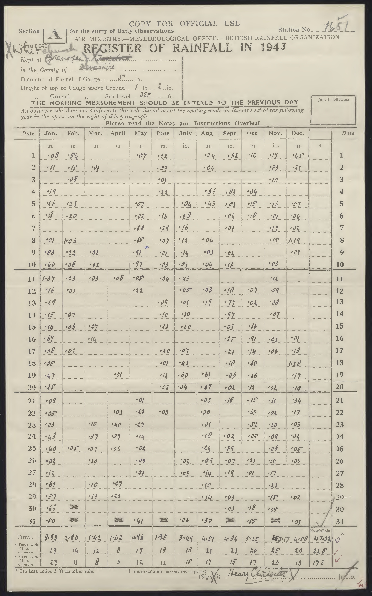
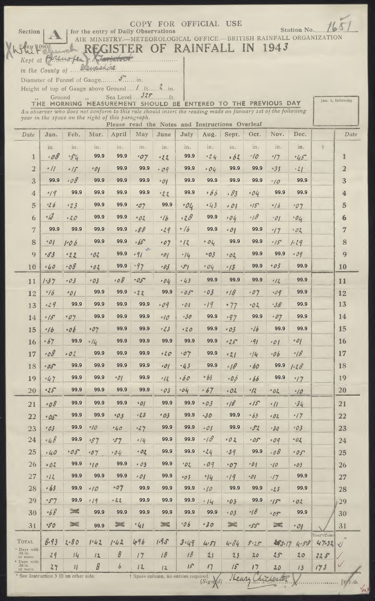
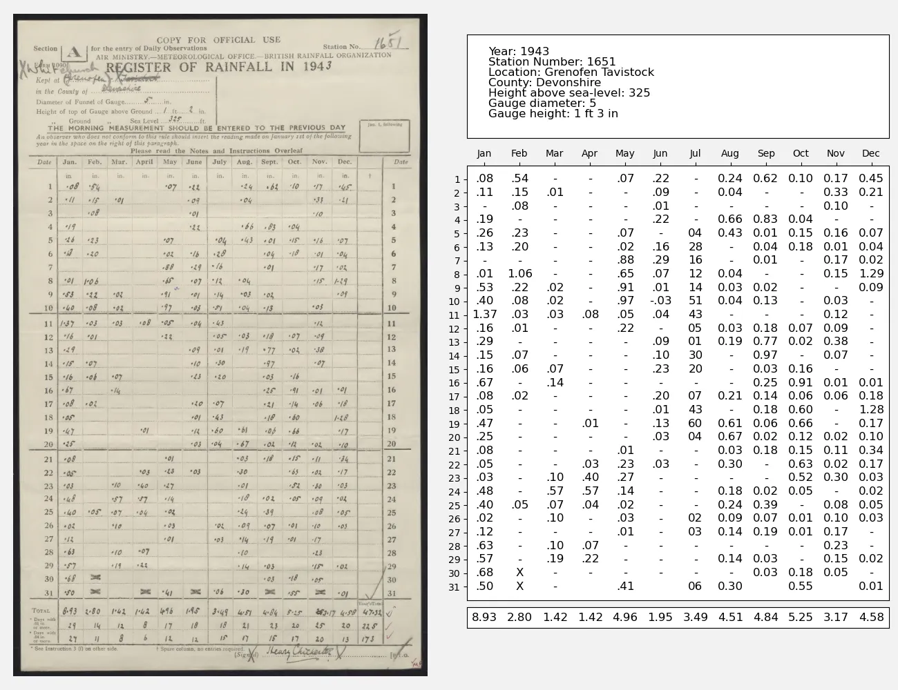

Pre-processing¶
Missing data is a problem. We’d get much more accurate data extractions if originally, when filling out the forms, we’d put in zero values explicitly, and a nominal value (say 99.9) for missing data. Then the forms would always have a complete grid of entries. Can we deal with this after the fact - by pre-processing the images to add numbers in the missing spaces?
|  |  |
This works very well. Running exactly the same whole-page data extraction process as before, but on the infilled images, we get excellent results. (I’ve filtered the ‘99.9’s out of the results.)
This is great, but the obvious catch is that the pre-processing is not easy to do. Here I’ve used the OpenCV library to find the empty boxes and fill them in. The process is to find the horizontal and vertical lines that make up the table, then find empty cells between those lines, and fill those in. This is too fussy a process to work generally - it depends precisely on the image colour, contrast and format - so it’s not a general solution. But this probably could be used to produce a few hundred successful page digitisations, which could then be used to fine-tune the LLM (to cope better with missing data) - so we might be able to bootstrap our way to a more general solution.
#!/usr/bin/env python
# The LLM is confused by the empty grid-cells in the rainfall data table.
# This script finds the empty cells and adds a mark to them.
import os
import PIL.Image
import numpy as np
import cv2
import argparse
parser = argparse.ArgumentParser()
parser.add_argument("--img", help="Image number", type=int, required=False, default=3)
parser.add_argument("--debug", help="Output intermediate images", action="store_true")
parser.add_argument(
"--threshold_h",
help="Value boundary for black:white distinction (0-255) for horizontal line search",
type=int,
required=False,
default=180,
)
parser.add_argument(
"--threshold_v",
help="Value boundary for black:white distinction (0-255) for vertical line search",
type=int,
required=False,
default=200,
)
args = parser.parse_args()
# Make greyscale image from the original
def make_greyscale_image(img):
img_gray = cv2.cvtColor(img, cv2.COLOR_BGR2GRAY)
return img_gray
# Make binary image from greyscale
def make_binary_image(img_gray, threshold_x):
(thresh, img_bin) = cv2.threshold(img_gray, threshold_x, 255, cv2.THRESH_BINARY)
return cv2.bitwise_not(img_bin)
# Find horizontal lines
def find_horizontal_lines(img_gray):
img_bin_h = make_binary_image(img_gray, args.threshold_h)
# Discard all lines in the top fifth of the image
img_bin_h[: img_bin_h.shape[0] // 5, :] = 0
# And in the bottom 20th
img_bin_h[img_bin_h.shape[0] - img_bin_h.shape[0] // 20 :, :] = 0
if args.debug:
cv2.imwrite("threshold_h.jpg", img_bin_h)
# Blur horizontally to make dotted lines continuous
img_hblur = cv2.GaussianBlur(img_bin_h, (19, 3), 0)
if args.debug:
cv2.imwrite("hblur.jpg", img_hblur)
kernel_length_h = (np.array(img_bin_h).shape[0]) // 100
horizontal_kernel = cv2.getStructuringElement(cv2.MORPH_RECT, (kernel_length_h, 1))
im_temp_h = cv2.erode(img_hblur, horizontal_kernel, iterations=3)
horizontal_lines_img = cv2.dilate(im_temp_h, horizontal_kernel, iterations=3)
if args.debug:
cv2.imwrite("h2.jpg", horizontal_lines_img)
# Find lines in the edges using Hough Line Transform
hlines = cv2.HoughLinesP(
horizontal_lines_img,
1,
np.pi / 180,
threshold=100,
minLineLength=500,
maxLineGap=100,
)
# Create an image with only horizontal lines drawn
horizontal_lines_img = make_binary_image(img_gray, 1) # blank
if hlines is not None:
for line in hlines:
x1, y1, x2, y2 = line[0]
if abs(y1 - y2) < 10: # Filter out non-horizontal lines
cv2.line(
horizontal_lines_img,
(0, y1),
(img.shape[1], y2),
(255, 255, 255),
1,
)
return horizontal_lines_img
# Find vertical lines
def find_vertical_lines(img_gray):
img_bin_v = make_binary_image(img_gray, args.threshold_v)
# Discard all lines in the top third of the image
img_bin_v[: img_bin_v.shape[0] // 3, :] = 0
# And in the bottom 10th
img_bin_v[img_bin_v.shape[0] - img_bin_v.shape[0] // 10 :, :] = 0
if args.debug:
cv2.imwrite("threshold_v.jpg", img_bin_v)
# Blur verticaly to make dotted lines continuous
img_vblur = cv2.GaussianBlur(img_bin_v, (3, 21), 0)
if args.debug:
cv2.imwrite("vblur.jpg", img_vblur)
kernel_length_v = (np.array(img_bin_v).shape[1]) // 120
vertical_kernel = cv2.getStructuringElement(cv2.MORPH_RECT, (1, kernel_length_v))
im_temp_v = cv2.erode(img_bin_v, vertical_kernel, iterations=3)
vertical_lines_img = cv2.dilate(im_temp_v, vertical_kernel, iterations=3)
if args.debug:
cv2.imwrite("v2.jpg", vertical_lines_img)
# Find lines in the edges using Hough Line Transform
vlines = cv2.HoughLinesP(
vertical_lines_img,
1,
np.pi / 180,
threshold=50,
minLineLength=200,
maxLineGap=500,
)
# Create an image with only vertical lines drawn
vertical_lines_img = make_binary_image(img_gray, 1) # blank
if vlines is not None:
for line in vlines:
x1, y1, x2, y2 = line[0]
if abs(x1 - x2) < 10: # Filter out non-vertical lines
cv2.line(
vertical_lines_img,
(x1, 0),
(x2, img.shape[0]),
(255, 255, 255),
1,
)
return vertical_lines_img
def table_detection(img):
img_gray = make_greyscale_image(img)
if args.debug:
cv2.imwrite("greyed_out.jpg", img_gray)
vertical_lines_img = find_vertical_lines(img_gray)
if args.debug:
cv2.imwrite("vlines.jpg", vertical_lines_img)
horizontal_lines_img = find_horizontal_lines(img_gray)
if args.debug:
cv2.imwrite("hlines.jpg", horizontal_lines_img)
# Both sets of lines
lines_img = cv2.bitwise_or(horizontal_lines_img, vertical_lines_img)
if args.debug:
cv2.imwrite("lines.jpg", lines_img)
# find contours in the lines image
contours, hierarchy = cv2.findContours(
lines_img, cv2.RETR_LIST, cv2.CHAIN_APPROX_SIMPLE
)
# Find the contours that are likely to be the table
filtered_contours = []
for contour in contours:
x, y, w, h = cv2.boundingRect(contour)
if w < 130 or w > 180:
continue
if h < 70 or h > 150:
continue
if x > 2000:
continue
filtered_contours.append(contour)
# Draw the contours on the original image
img_contours = make_binary_image(img_gray, args.threshold_h)
img_contours = cv2.cvtColor(img_contours, cv2.COLOR_GRAY2BGR)
cv2.drawContours(img_contours, filtered_contours, -1, (0, 255, 0), 2)
if args.debug:
cv2.imwrite("contours_image.jpg", img_contours)
# Find the empty cells
empty_contours = []
img_empty = make_binary_image(img_gray, args.threshold_h)
for contour in filtered_contours:
x, y, w, h = cv2.boundingRect(contour)
mn = cv2.mean(img_empty[y + 10 : y + h - 10, x + 10 : x + w - 10])
if mn[0] < 5:
empty_contours.append(contour)
cv2.rectangle(img_contours, (x, y), (x + w, y + h), (255, 0, 0), 10)
if args.debug:
cv2.imwrite("filled_image.jpg", img_contours)
# Fill numbers into the empty cells
for contour in empty_contours:
x, y, w, h = cv2.boundingRect(contour)
cv2.putText(
img,
"99.9",
(x + w // 2 - 20, y + h - 20),
cv2.FONT_HERSHEY_SIMPLEX,
1,
(0, 0, 0),
2,
)
cv2.imwrite("missing_infilled.jpg", img)
img = cv2.imread(
"../images/jpgs_300dpi/Devon_1941-1950_RainNos_1651-1689-%d.jpg" % args.img
)
# Copy of the original - for plotting
cv2.imwrite("./original.jpg", img)
table_detection(img)

{kind=link}
{kind=link}